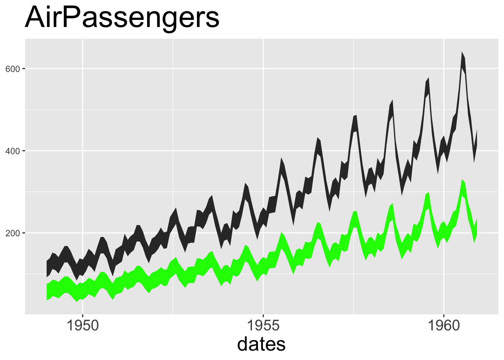

Today we’ll look at GGPlot2, the graphics package associated with the Tidyverse.
Learning Goal
You will be introduced into how and why to use visualizations in DS 6001.
Visualizations in EDA.
Visualization in creating data products that communicate results, such as scientific publications, infographics, and interactive visualizations.
These things come at the end of the data science pipeline.
Today, I just want to introduce you to the thinking and design logic behind the package, so you can be confident in learning more as you need to.
The Grammar of Graphics
As with Dplyr, GGPlot2 is a an entirely new system that supplants the older graph functions that are built into R.
And just as with Dplyr, it is founded on a principled analysis of its domain and approaches code design through developing a basic grammar which can then be expressed in R.
In effect, Dplyr is built on a grammar of data by defining a set of verbs that can be used to build phrases that are put together into larger constructs.
These verbs correspond to a process of data transformation.
GGPlot2 is built on a grammar of graphics that defines a set of nouns that correspond to the architecture of a graphic (aka plot).
The phrase “grammar of graphics” actually comes from the book by that name written by statistician and computer scientist Leland Wilkinson in 1999 and later revised:
The Second Edition
It’s worth reading if you want to get a solid grounding in visualization, which belongs to the design area of data science.
A Layered Model
Wilkinson takes an object-oriented approach to visualization and formalizes two main principles:
Graphics are built out of distinct layers of grammatical elements.
In each layer, meaningful plots are constructed through mappings of data onto aesthetics.
The essential grammatical elements to create any visualization are:
According to Wickham, who adopted these principles and applied them to R,
A grammar of graphics is a tool that enables us to concisely describe the components of a graphic. Such a grammar allows us to move beyond named graphics (e.g., the “scatterplot”) and gain insight into the deep structure that underlies statistical graphics (Wickham 2012).
Wickham takes this idea and develops it into this:
Here is a basic graph – a scatterplot comparing two features in the iris dataset. I’ve broken out the functions and arguments so you can see how the grammar is implemented:
ggplot() starts by creating a coordinate system that you can add layers to.
The coordinate system can be changed after the graph is initiated.
These layers are created by geometry functions.
For example, geom_point creates a point-based visualization.
There are many geom_ functions, and they can be layered on top of each other:
geom_point()
geom_bar()
geom_histogram()
geom_boxplot()
etc.
Here we have a plot with two layers. The second layer is created by a stat function, which is similar to geom, but applies a statistical transformation to the data.
The core the process is that each layer mapsdata onto what are called aesthetics (aes).
Aesthetics are visual objects and properties that can used to represent numeric and categorical values
x and y positions (in a two-dimensional system)
Color
Size
Shape
Text
In addition to these elements, ggplot also provides faceting, which is the visual equivalent of grouping by. Just as with group by, a data feature is used to divide the visualization into groups, each taking the same form but showing a different subset of data.
`geom_smooth()` using formula 'y ~ x'
`geom_smooth()` using formula 'y ~ x'
Anyway, the general structure of a ggplot statement is the following:
ggplot(data = <DATA>) +
<GEOM_FUNCTION>(
mapping = aes(<MAPPINGS>),
stat = <STAT>,
position = <POSITION>
) +
<COORDINATE_FUNCTION> +
<FACET_FUNCTION>
The + operator
You will notice the use of the + operator to connect ggplot functions together to produce a final product. Theses are not quite the same as pipes %>%.
The difference is that pipes feed data from one function to another, whereas the + operation combines elements to produce an increasingly developed visualization.
Another thing to keep in mind: the + always goes at the end of a line, not at the beginning.
Examples
Let look at how to build out graphics using the built-in diamonds data.
diamonds
# A tibble: 53,940 × 10
carat cut color clarity depth table price x y z
<dbl> <ord> <ord> <ord> <dbl> <dbl> <int> <dbl> <dbl> <dbl>
1 0.23 Ideal E SI2 61.5 55 326 3.95 3.98 2.43
2 0.21 Premium E SI1 59.8 61 326 3.89 3.84 2.31
3 0.23 Good E VS1 56.9 65 327 4.05 4.07 2.31
4 0.29 Premium I VS2 62.4 58 334 4.2 4.23 2.63
5 0.31 Good J SI2 63.3 58 335 4.34 4.35 2.75
6 0.24 Very Good J VVS2 62.8 57 336 3.94 3.96 2.48
7 0.24 Very Good I VVS1 62.3 57 336 3.95 3.98 2.47
8 0.26 Very Good H SI1 61.9 55 337 4.07 4.11 2.53
9 0.22 Fair E VS2 65.1 61 337 3.87 3.78 2.49
10 0.23 Very Good H VS1 59.4 61 338 4 4.05 2.39
# ℹ 53,930 more rows
p1 <- gg3 +theme(legend.position="top") # top / bottom / left / right
Inside plot
p2 <- gg3 +theme(legend.justification=c(1,0), legend.position=c(1,0)) # legend justification is the anchor point on the legend, considering the bottom left of legend as (0,0)gridExtra::grid.arrange(p1, p2, ncol=2)
Create a new factor variable used in the legend, ordered as you need. Then use this variable instead in the plot.
Legend title, text, box, symbol
legend.title - Change legend title
legend.text - Change legend text
legend.key - Change legend box
guides - Change legend symbols
gg3 +theme(legend.title =element_text(size=20, color ="firebrick"), legend.text =element_text(size=15), legend.key=element_rect(fill='steelblue')) +guides(colour =guide_legend(override.aes =list(size=2, shape=4, stroke=2))) # legend title color and size, box color, symbol color, size and shape.
Plot text and annotation
Add text in chart
# Not Run: gg + geom_text(aes(xcol, ycol, label=round(labelCol), size=3)) # general format gg +geom_text(aes(label=color, color=color), size=4)
# Absolute bar chart: Specify both X adn Y axis. Set stat="identity"df <-aggregate(mtcars$mpg, by=list(mtcars$cyl), FUN=mean) # mean of mpg for every 'cyl'names(df) <-c("cyl", "mpg")head(df)
Don't know how to automatically pick scale for object of type ts. Defaulting to continuous.

Area
geom_area is similar to geom_ribbon, except that the ymin is set to 0. If you want to make overlapping area plot, use the alpha aesthetic to make the top layer translucent.